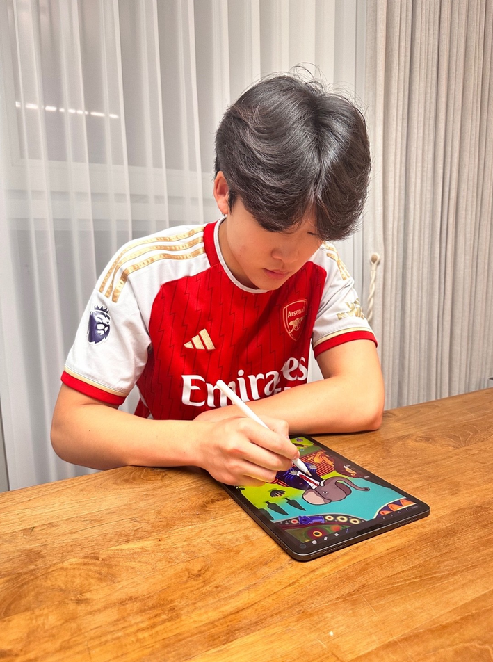
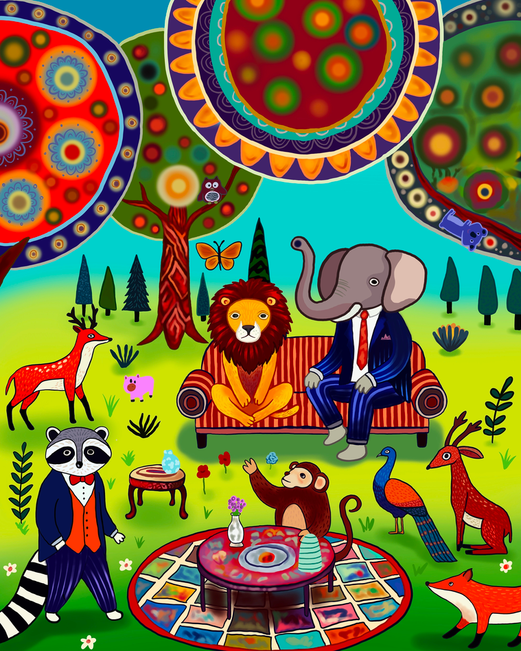

Spotlight: Zion Choi

1. What movies or TV shows do you enjoy watching these days?
Recently, I often watch nature documentaries. I’m especially impressed by scenes where animals live together in harmony. Animals often appear in my drawings as well, and while watching documentaries I often imagine, “Wouldn’t it be fun if they all played together like that?”
2. If you could describe your artwork in one word, what would it be?
I’d like to describe it as “Friendship.” The animals in my drawings are all friends, and though their colors are different, I draw them playing together.
3. If an alien came to Earth and asked you to paint something, what would you draw for them?
I’d want to show the alien the happiest scene on Earth. So, I would give them a picture of all my animal friends gathering together, sharing snacks, dancing, and laughing. That way, the alien could feel, “Earth is a fun and happy place.”
4. If you could switch lives for a day with a character from your artwork, which one would you be?
I’d like to be an elephant. With its big ears and trunk, an elephant can protect its friends, and above all, it feels like a confident yet warmhearted friend. I especially love the image of the elephant sitting and chatting with friends in my drawings.
5. How did you feel about collaborating with artist Choi Jaeyong on the work My Friends Came to Visit My House? What was most important to you in the process?
At first, it felt amazing, almost as if the animals from my drawings had really entered my room. While working with Choi Jaeyong, it felt like a new world was opening up as my colors met his compositions. I paid particular attention to making sure the atmosphere of all the friends gathering together was well expressed.
6. What do you hope the audience will feel when they see your artwork in this exhibition?
What I hope is simple. I’d like them to feel, “This is fun, this is cute, I want to be part of those friends too.” If the artwork makes someone smile even briefly, I feel my wish has come true.
7. Have you felt any changes in yourself through participating in this exhibition?
Yes. Unlike when I draw alone, through collaboration I realized that my work can become richer when it meets someone else’s style. I also gained confidence in thinking, “My art can connect with others too.”

1. 요즘 즐겨 보는 영화나 TV 프로그램은 무엇인가요?
최근에는 자연 다큐멘터리를 자주 봅니다. 특히 동물들이 서로 어울려 살아가는 장면들이 인상 깊습니다. 제 그림 속에도 동물 친구들이 자주 등장하는데, 다큐멘터리를 보면서 ‘저렇게 다 같이 어울리면 즐겁겠다’는 상상을 많이 하게 됩니다.
2. 본인의 작품을 한 단어로 표현한다면 무엇일까요?
“우정”이라고 표현하고 싶습니다. 제 그림 속 동물들은 다 서로 친구이고, 색깔도 다르지만 어울려 노는 장면을 그리기 때문입니다.
3. 만약 외계인이 지구에 와서 그림을 그려달라고 한다면, 어떤 그림을 그려주고 싶나요?
외계인에게는 지구에서 가장 즐거운 장면을 보여주고 싶습니다. 그래서 제가 그린 동물 친구들이 다 같이 모여 간식을 나누고, 춤추고, 웃고 있는 장면을 선물하고 싶습니다. 그러면 외계인도 ‘지구는 재미있고 행복한 곳이구나’ 하고 느낄 수 있을 것 같습니다.
4. 그림 속 인물과 하루를 바꿔 살 수 있다면, 작품 속 어떤 캐릭터가 되고 싶나요?
저는 코끼리가 되고 싶습니다. 코끼리는 큰 귀와 코로 친구들을 지켜줄 수 있고, 무엇보다 당당하면서도 따뜻한 친구처럼 느껴집니다. 그림 속에서 친구들과 함께 앉아 이야기하는 코끼리의 모습이 제일 마음에 듭니다.
5. 최재용 작가와의 협업 작품 〈내 친구들이 우리 집에 놀러왔어요〉가 주는 느낌은 어떠했나요? 작업 과정에서는 특별히 어떤 부분을 가장 중요하게 생각했나요?
처음에는 제 그림 속 동물들이 정말 제 방에 들어와 있는 것 같아 신기했습니다. 최재용 작가님과 함께 작업하면서, 제 색감과 작가님의 구성이 만나서 새로운 세상이 열리는 느낌이었습니다. 저는 특히 친구들이 다 같이 모여 있는 분위기가 잘 드러나도록 신경을 썼습니다.
6. 이번 전시에서 관객들이 작품을 보고 어떤 감정을 느끼길 바라나요?
제가 바라는 건 단순합니다. ‘즐겁다, 귀엽다, 나도 저 친구들 속에 들어가고 싶다’ 하는 마음을 느껴주시면 좋겠습니다. 그림 앞에서 잠시라도 미소가 나왔다면 제 바람이 이뤄진 거라고 생각합니다.
7. 전시에 참여하면서 스스로 달라졌다고 느낀 점이 있나요?
네. 혼자 그림을 그릴 때와는 다르게 협업을 하면서 제 그림이 다른 사람의 스타일과 만나 더 풍성해진다는 걸 알게 되었습니다. ‘내 그림이 다른 사람과도 연결될 수 있구나’ 하는 자신감도 생겼습니다.
